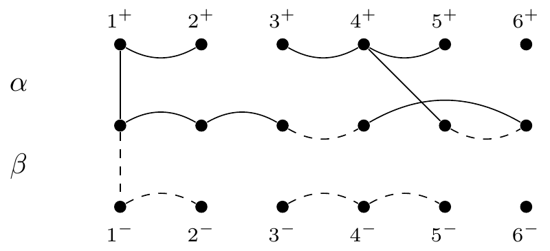

Chapter 2 Bells and Whistles
Chapter 1 briefly introduces the basic features of R Markdown and bookdown. For full details please refer to:
In this Chapter we are going to introduce extra features/environments, some of which will only work when using the St Andrews template. Big thanks to TJ McKinley for sharing with us the code for the task and solution features.
2.1 Task and solution block
The task block can be used to set exercises for the students. The solution block reveals the answer to the student (if enabled; more on that later). For the gitbook/HTML version
there is a toggle button Show Solution that reveals the answer. In the PDF version, there is a hyperlink to take the reader to the solutions, which are in the appendix. There is also a link to get back to the place in the text from the appendix.
The task block is used as follows. For example:
```{task}
Here is a task written in **markdown**.
```which renders as:
You can include chunks within the task chunk, but you need to use double backticks within the chunk, and leave carriage returns around the internal chunk. For example:
```{task}
``{r}
x <- 2 + 2
x
``
```
which renders as:
x <- 2 + 2
x## [1] 4Be careful to have suitable carriage returns around e.g. enumerate or itemize environments inside the chunk also. For example:
```{task}
Here is a list:
1. item 1
2. item 2
```
will not render nicely. But
```{task}
Here is a list:
1. item 1
2. item 2
```
will:
Here is a list:
- item 1
- item 2
The solution chunk works in the same way, and the numbers will follow the previous task chunk (so you can set tasks without solutions). For example:
```{task}
Add 2 and 2 together
```
```{solution}
``{r}
2 + 2
``
```
gives:
2.2 Different task and solution titles
task and solution boxes can be given different names using the title option (these can be set globally if preferred). For example:
```{task, title = "Question"}
Produce a scatterplot of `mpg` against `hp`. What does the relationship look like?
```
```{solution, title = "Answer"}
``{r}
plot(hp ~ mpg, data = mtcars,
pch=19, col='darkgrey')
``
```
renders as:
mpg against hp. What does the relationship look like?
2.3 Two-tabbed solution
You can have a task with two different solutions side-by-side, using the multCode = T option to the solution box. For example, you may want to show a solution using both base R and tidyverse. Here the two tabs are separated by four consecutive hashes: ####, and the titles option gives the tab titles (these can be set globally if preferred). For example:
```{task}
Produce a scatterplot of `mpg` against `hp`. What does the relationship look like?
```
```{solution, multCode=T, titles = c("Base R", "tidyverse")}
``{r, fig.height=6, fig.width=6, out.width = "60%"}
plot(hp ~ mpg, data = mtcars,
pch=19, col='darkgrey')
``
The plot suggests that a linear relationship might exist between the two variables.
So we can proceed by fitting a linear model in R.
####
``{r, fig.height=6, fig.width=6, out.width = "60%"}
ggplot(mtcars) +
geom_point(aes(x = mpg, y = hp))
``
The plot suggests that a linear relationship might exist between the two variables.
So we can proceed by fitting a linear model in R.
```will render as:
mpg against hp. What does the relationship look like?
2.4 Multi-tabbed options
You can also have just the multicode part (not embedded within the solution panel.). These appear side-by-side in the PDF document. Note that currently you can only have two tabs. For example:
```{multCode, titles=c('Part A', 'Part B')}
Two options:
* Option 1 - This is some text for part A
####
Two options:
* Option 2 - This is some text for part B
```
will typeset to:
Two options:
- Option 1 - This is some text for part A
Two options:
- Option 2 - This is some text for part B
2.5 Task with held solutions
In the solution chunk header, if renderSol=FALSE then the solutions are not rendered as part of the book. For example:
```{task, title='Task (solution hidden)'}
Produce a scatterplot of `mpg` against `hp`. What does the relationship look like?
```
```{solution, renderSol=FALSE}
``{r}
plot(hp ~ mpg, data = mtcars,
pch=19, col='darkgrey')
``
This is my solution which you will only see if `renderSol` is set to `TRUE`.
```
will render as:
mpg against hp. What does the relationship look like?
By default, in _setup.Rmd, renderSol is set to TRUE. If one of your chapters is a tutorial/practical, and you want to release the answers later on in the course,
it can become tedious having to set renderSol to FALSE for every question.
Instead, you can override this default at the beginning of each chapter, so you can turn on/off the solutions, as follows:
``{r, include=F}
opts_chunk$set(renderSol=FALSE)
``
Note that the chunk above changes everything after the chunk, so later chapters will retain this change unless you reset it.
2.6 Adding Boxes
Sometimes you may wish to add a box section to your notes. There are currently three different coloured boxes defined; green and blue with white backgrounds and blue with pale blue background. For example,
:::: {.greenbox data-latex=""}
This is an example of a green box.
::::
:::: {.bluebox data-latex=""}
This is an example of a blue box.
::::
:::: {.palebluebox data-latex=""}
This is an example of a blue box with pale blue background.
::::will render as:
This is an example of a green box.
This is an example of a blue box.
This is an example of a blue box with pale blue background.
You can also give your box a title. You can use ::: to denote a separate section inside the box:
:::: {.palebluebox data-latex=""}
::: {.center data-latex=""}
**This is my title**
:::
This is the contents of my box.
::::
renders as
This is my title
This is the contents of my box.
You can add equations, figures, r-code etc to your boxes. For example:
:::: {.greenbox data-latex=""}
::: {.center data-latex=""}
**Things you can include**
:::
Equations:
$$y = \beta_0 + \beta_1X$$
R-code:
```r
1+1
```
Figures:
Formatting:
+ **bold**
+ *italic*
a) sub bullets
::::will render as:
Things you can include
Equations:
\[y = \beta_0 + \beta_1X\] R-code:
1+1## [1] 2Figures:

Formatting:
- bold
- italic
- sub bullets
The colour scheme for the boxes is defined in the following files:
style.css. For html output, see the section “Create colour scheme for boxes”preamble.tex. For pdf output, see the section “LaTeX to create coloured boxes”
For more information on these boxes and other custom blocks have a look at this section of the R-Markdown Cookbook.
2.7 Shiny apps and HTML widgets
You can add Shiny apps and HTML widgets to your book.
For example, using the knitr::include_app(...) function we can embed a Shiny app that is hosted somewhere else.
Note that this app renders as an interactive panel in the web book and a static screenshot in the PDF. For the PDF image to work properly, make sure you include dev='png' in the chunk header. You can then click on either the image or the link in the caption to live view the app.
``{r myshiny, echo=FALSE, screenshot.opts=list(delay=3), dev='png',fig.cap='An example of a shiny app. You can see a live version here'}
knitr::include_app("https://lindesaysh.shinyapps.io/faithfulshiny/", height='600px')
``renders as
Figure 2.1: An example of a shiny app. You can see a live version here
2.8 TikZ
It’s possible to build TikZ from bookdown, but getting it to work is non-trivial: you need to install (at least) the following packages via the R console:
install.packages("magick")
install.packages("pdftools")both of which may require external dependencies to be installed; this seems to vary a lot between systems and if you need help with a particular system, please get in touch (fls3@).
Commutative diagrams work:Figure 2.2: The First Isomorphism Theorem
And so does tikzpicture with nodes, arrows, and so on.

Since these TikZ diagrams are converted to images, you must ensure that alt-text is provided for them. You should also ensure that the text surrounding the image adequately explains what the image conveys.
It doesn’t seem to be possible to get pgfplots to work, so you may need to produce each plot manually and then include them as a figure like above. You may also wish to consider producing your plots in R using (e.g.) the library ggplot2.